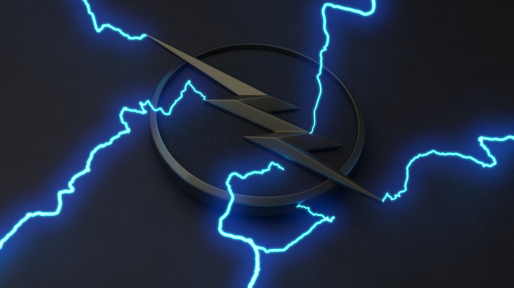

Pagina web principal del segundo proyecto
Cuerpo de la pagina
Esta es la pagina de principal del proyecto dos utilizando
el software Git para poder llevar un mejor control de las versiones
que vayamos haciendo en el transcurso del desarrollo del proyecto.
